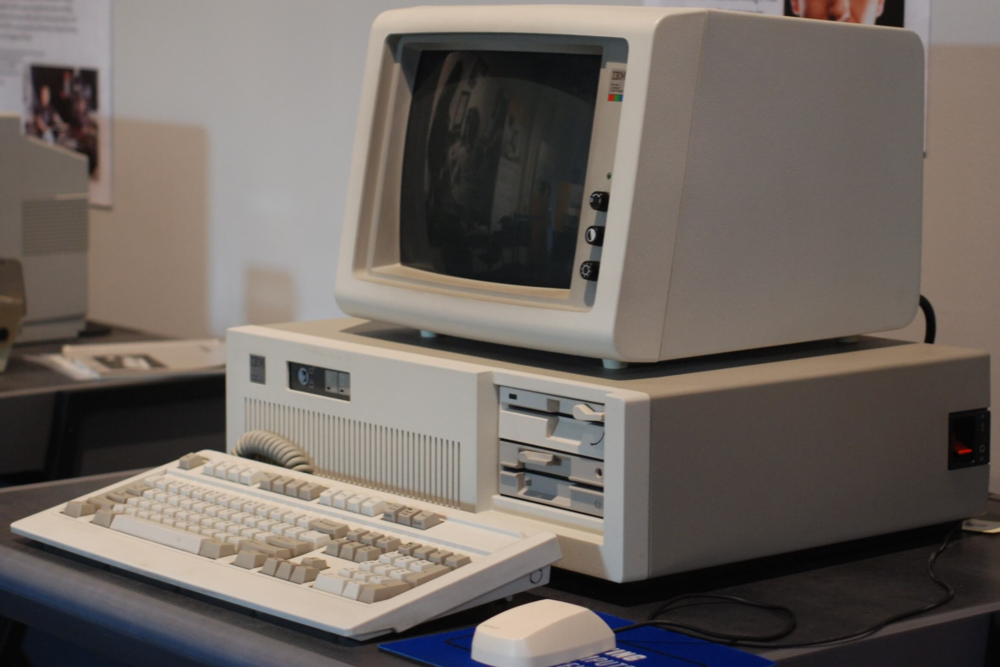

CD. (sigla del ingl. Compact Disc). disco compacto
CD-ROM. (sigla el ingl. Compact Disc Read-Only Muory). Inform. Disco compacto de gran capacidad que puede almacenar información, en distintos formatos para ser procesada por el ordenador
Disquete Inform. Disco magnético portátil, de capacidad reducida, que se introduce en un ordenador para su grabación o lectura.
Ordenador con disquetera

Ordenador. (Del lat. Ordiantor, -oris). 3. Esp. Máquina electrónica dotada de una muoria de gran capacidad y de métodos de tratamiento de información, capaz de resolver problemas artiméticos y lógicos gracias a la utilización automática de programas registrados en ella. personal. m. Es de dimensiones reducidas, con limitaciones de capacidad de mouria y velocidad, pero con total autonomía.
Según Bill Gates: El ordenador nació para resolver problemas que antes no existian